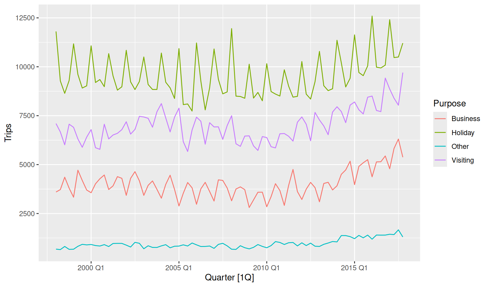
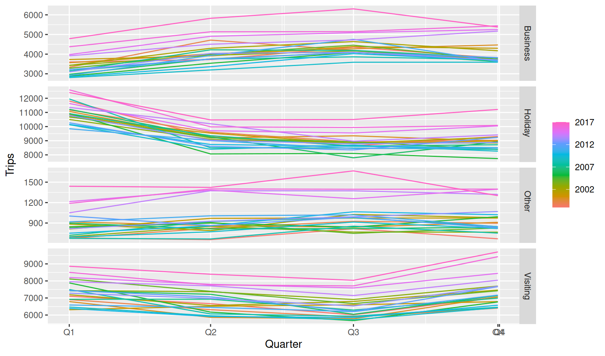
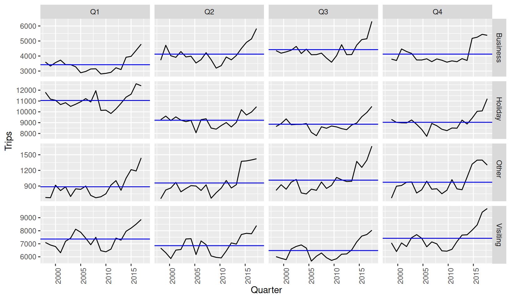
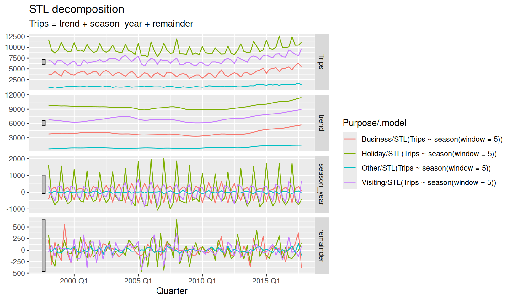
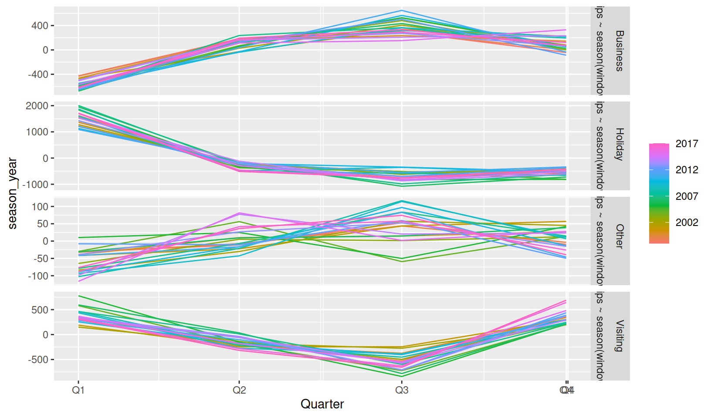
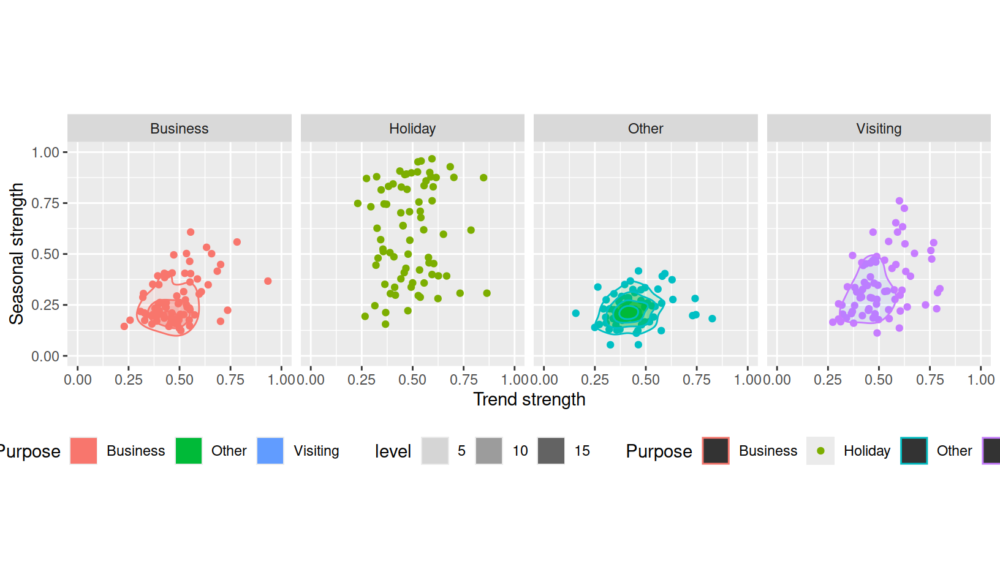

install.packages("feasts")Feast your eyes on the latest CRAN release to the collection of tidy time series R packages. The feasts package is feature-packed with functions for understanding the behaviour of time series through visualisation, decomposition and feature extraction. The package name feasts is an acronym summarising its key features: Feature Extraction And Statistics for Time Series. Much like Earo Wang’s tsibble package, the feasts package is designed to work with multiple series observed at any time interval.
If you’ve used graphics from Rob Hyndman’s forecast package or features from tsfeatures, this package allows these features to be used seamlessly with tsibble and the tidyverse.
With the package now available on CRAN, it is now easier than ever to install:
To see what is on feasts’ menu, we’ll start by loading a few packages:
library(tidyverse)
library(tsibble)
library(feasts)In particular, we’ll be exploring the total quarterly Australian domestic overnight trips for a variety of locations and purposes around Australia.
tourism# A tsibble: 24,320 x 5 [1Q]
# Key: Region, State, Purpose [304]
Quarter Region State Purpose Trips
<qtr> <chr> <chr> <chr> <dbl>
1 1998 Q1 Adelaide South Australia Business 135.
2 1998 Q2 Adelaide South Australia Business 110.
3 1998 Q3 Adelaide South Australia Business 166.
4 1998 Q4 Adelaide South Australia Business 127.
5 1999 Q1 Adelaide South Australia Business 137.
6 1999 Q2 Adelaide South Australia Business 200.
7 1999 Q3 Adelaide South Australia Business 169.
8 1999 Q4 Adelaide South Australia Business 134.
9 2000 Q1 Adelaide South Australia Business 154.
10 2000 Q2 Adelaide South Australia Business 169.
# i 24,310 more rowsThere’s plenty more datasets to explore in the tsibbledata package.
Not sure what a tsibble is? Learn about tidy time series data in Reintroducing tsibble: data tools to melt the clock.
Graphics
A time series can be plotted in many ways, each of which providing a different perspective into the features and structural patterns of the time series.
The most common graphic is a time series plot, which simply shows the data (y-axis) against time (x-axis).
tourism %>%
group_by(Purpose) %>%
summarise(Trips = sum(Trips)) %>%
autoplot(Trips)
This allows us to see the big picture, and especially evident is that Holiday travel is the most common domestic tourism purpose. We can also see a substantial increase in trips after 2010. Holiday and business trips show the most seasonality, but it is unclear which quarter has the most trips.
For a closer look at seasonality we can see seasonal plots (gg_season()) and seasonal subseries plots (gg_subseries()).
tourism %>%
group_by(Purpose) %>%
summarise(Trips = sum(Trips)) %>%
gg_season(Trips)
A seasonal plot wraps the time axis by each seasonal period (in this case years), to more clearly display the seasonality in the data. It is clear from the Holiday facet that most trips are made in Q1, possibly to make the most of Australia’s hot summer days. It also seems that Q1 (summer) and Q4 (spring) are popular times to visit friends and family, with Q2 (autumn) and Q3 (winter) being a common time for business trips.
tourism %>%
group_by(Purpose) %>%
summarise(Trips = sum(Trips)) %>%
gg_subseries(Trips)
The subseries plot is especially useful for identifying changes in seasonal patterns over time. It produces a set of data subseries for the times within each seasonal period. The above shows separate plots consisting of the data from the same quarter, and the blue line indicates the average. From this plot we can see that Q4 business trips have stopped growing, whilst Q1-Q3 continue to trend upward.
The feasts package can also do many more time series graphics, including:
- Lag plots
gg_lag() - Autocorrelation plots (
autoplot()ofACF(),PACF(), orCCF()) - Ensemble plots for time series (
gg_tsdisplay()) - Ensemble plots for time series residuals (
gg_tsresiduals()) - Plots of characteristic ARMA root (
gg_arma())
To see more of these plots in action, check out Rob Hyndman’s blog post on Time series graphics with feasts.
Also try out Earo Wang’s incredible calendar plots (facet_calendar() 🤯) from her sugrrants package!
Decompositions
The first release of feasts contains two decompositions which tidy up existing functions from the stats package.
| Method | stats | feasts |
|---|---|---|
| Classical seasonal decomposition | decompose() |
classical_decomposition() |
| Loess seasonal decomposition | stl() |
STL() |
Time series decompositions allow you to isolate structural components such as trend and seasonality from the data. The decomposition functions in feasts use a model-like formula interface, allowing you to control many aspects of the decomposition (using season(window = 5) allows the seasonality to change fairy quickly for quarterly data).
tourism %>%
group_by(Purpose) %>%
summarise(Trips = sum(Trips)) %>%
model(STL(Trips ~ season(window = 5))) %>%
components()# A dable: 320 x 8 [1Q]
# Key: Purpose, .model [4]
# : Trips = trend + season_year + remainder
Purpose .model Quarter Trips trend season_year remainder season_adjust
<chr> <chr> <qtr> <dbl> <dbl> <dbl> <dbl> <dbl>
1 Business STL(Trips ~~ 1998 Q1 3599. 3814. -425. 210. 4024.
2 Business STL(Trips ~~ 1998 Q2 3724. 3854. 185. -315. 3539.
3 Business STL(Trips ~~ 1998 Q3 4356. 3895. 296. 165. 4060.
4 Business STL(Trips ~~ 1998 Q4 3796. 3936. -42.9 -97.7 3838.
5 Business STL(Trips ~~ 1999 Q1 3335. 3991. -431. -225. 3766.
6 Business STL(Trips ~~ 1999 Q2 4714. 3986. 174. 555. 4540.
7 Business STL(Trips ~~ 1999 Q3 4190. 3986. 285. -81.4 3905.
8 Business STL(Trips ~~ 1999 Q4 3701. 3970. 1.45 -271. 3700.
9 Business STL(Trips ~~ 2000 Q1 3562. 3943. -464. 83.8 4026.
10 Business STL(Trips ~~ 2000 Q2 4018. 3991. 162. -135. 3856.
# i 310 more rowsThe decomposed table (dable) explains how the Trips variable has been split into three new series via Trips = trend + season_year + remainder, which has been done for all four travel purposes.
tourism %>%
group_by(Purpose) %>%
summarise(Trips = sum(Trips)) %>%
model(STL(Trips ~ season(window = 5))) %>%
components() %>%
autoplot()
The dable can also be plotted to show how each of the decomposed components vary between series and time. A dable also behaves very similarly to a tsibble, allowing you to visualise the seasonality without distractions of trend and remainder terms.
tourism %>%
group_by(Purpose) %>%
summarise(Trips = sum(Trips)) %>%
model(STL(Trips ~ season(window = 5))) %>%
components() %>%
gg_season(season_year)
Features
A big feature of feasts is the ability to extract a set of features (single value summary of data characteristics) from the time series.
Features are particularly useful for visualising large collections of time series. Plotting multiple time series using the above methods do not scale very well beyond 10 similar series, and the original tourism dataset contains 304 (and even more if you consider aggregates)!
The STL decomposition above can be used to compute features about the strength of the its trend and seasonality components, allowing us to see an overview of the entire dataset’s patterns.
tourism %>%
features(Trips, feature_set(tags = "stl"))# A tibble: 304 x 12
Region State Purpose trend_strength seasonal_strength_year seasonal_peak_year
<chr> <chr> <chr> <dbl> <dbl> <dbl>
1 Adela~ Sout~ Busine~ 0.464 0.407 3
2 Adela~ Sout~ Holiday 0.554 0.619 1
3 Adela~ Sout~ Other 0.746 0.202 2
4 Adela~ Sout~ Visiti~ 0.435 0.452 1
5 Adela~ Sout~ Busine~ 0.464 0.179 3
6 Adela~ Sout~ Holiday 0.528 0.296 2
7 Adela~ Sout~ Other 0.593 0.404 2
8 Adela~ Sout~ Visiti~ 0.488 0.254 0
9 Alice~ Nort~ Busine~ 0.534 0.251 0
10 Alice~ Nort~ Holiday 0.381 0.832 3
# i 294 more rows
# i 6 more variables: seasonal_trough_year <dbl>, spikiness <dbl>,
# linearity <dbl>, curvature <dbl>, stl_e_acf1 <dbl>, stl_e_acf10 <dbl>The features from an STL decomposition also describe other behaviours such as how linear, curved, and spiky the data is. This dataset of features can be used with ggplot2 (and other packages) to produce stunning overviews of many time series.
tourism %>%
features(Trips, feature_set(tags = "stl")) %>%
ggplot(aes(x = trend_strength, y = seasonal_strength_year, colour = Purpose)) +
geom_point() +
stat_density_2d(aes(fill = Purpose, alpha = ..level..), bins = 5, geom = "polygon") +
facet_wrap(vars(Purpose), nrow = 1) +
coord_equal() +
xlim(c(0,1)) + ylim(c(0,1)) +
labs(x = "Trend strength", y = "Seasonal strength") +
theme(legend.position = "bottom")
Here, it is clear that holiday travel is the most seasonal purpose of tourism in Australia, however this is only the case for some regions. The strength of trend in these series varies similarly across travel purpose.
The first release includes a total of 42 feature metrics, which can be computed together using feature_set(pkgs = "feasts"). A list of all currently available features can be found in links from the ?feature_set help file.
Read more about feasts
- The pkgdown website
- Time series graphics from Forecasting: Principles and Practices (3ed.)
- The vignettes: Introduction to feasts
- The GitHub repository
Citation
BibTeX citation:
@online{o'hara-wild2019,
author = {O’Hara-Wild, Mitchell},
title = {Introducing Feasts},
date = {2019-08-30},
langid = {en}
}
For attribution, please cite this work as:
O’Hara-Wild, Mitchell. 2019. “Introducing Feasts.” August
30, 2019.